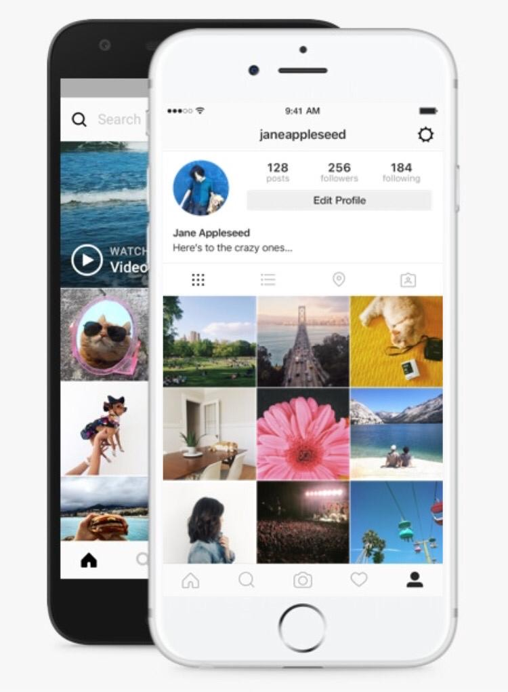

Historia de instagram
El desarrollo de Instagram se inició en San Francisco, cuando Kevin Systrom y Mike Krieger optaron por centrar sus múltiples funciones HTML5 check-in Burbn en un proyecto de fotografía móvil. El producto fue lanzado en el Apple App Store el 6 de octubre de 2010 bautizado como Instagram.1
En el mes de enero de 2011, Instagram añadió hashtags para ayudar a los usuarios a descubrir las fotos que los demás usuarios compartían sobre un mismo tema. Instagram animaba así a sus usuarios a añadir hashtags relevantes y específicos, en lugar de etiquetar palabras como foto con el objetivo de hacer las fotografías más populares, atraer a un mayor número de fans y conseguir más me gusta.4 En septiembre de 2011, la versión 2.0 se puso en marcha en la App Store.
El 3 de abril de 2012 salió la versión abierta al público para Android.6 Algunas semanas antes, Instagram había anunciado que estaba llevando a cabo pruebas en Android mediante una beta cerrada. En dicho momento, se dio la posibilidad de registrarse en una web para recibir un aviso una vez fuera lanzada la aplicación final, lo cual hicieron unas 430 000 personas. Una vez lanzada, la versión para Android consiguió más de un millón de descargas en menos de 24 horas. En los tres meses siguientes Instagram fue evaluado más de un millón de veces por los usuarios de Google Play, convirtiéndose de esta forma en la quinta aplicación más evaluada por dichos usuarios en mayo de 2013, la aplicación había sido evaluada más de 4 millones de veces.

Regístrate para ver fotos y videos
de tus amigos.
O
Al registrarte, aceptas nuestras
Condiciones, la Política de datos y
la Política de cookies.
¿Tienes una cuenta? Iniciar sesion
Descargar app.